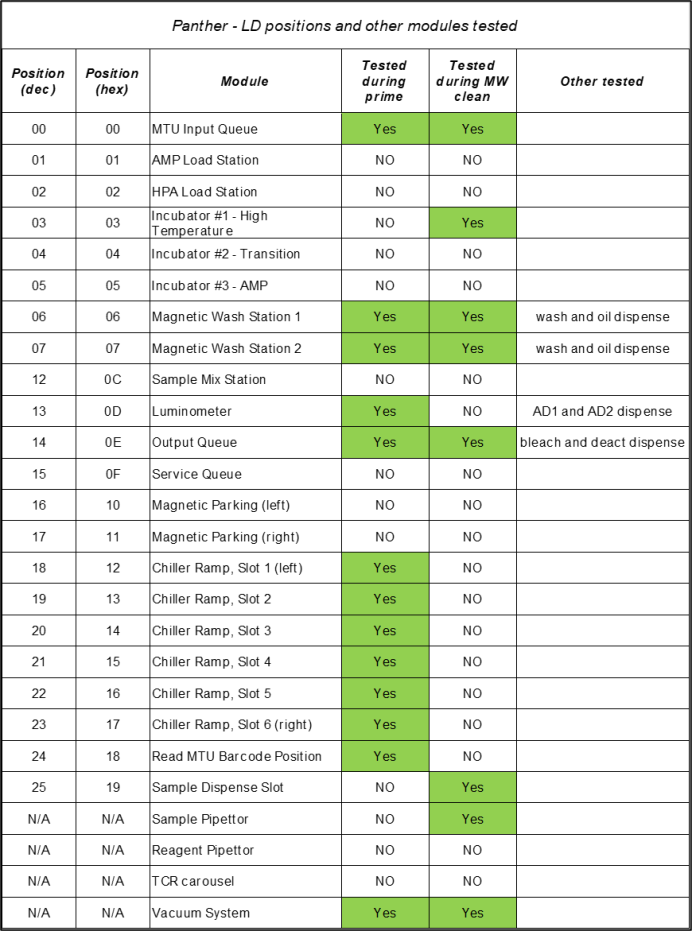
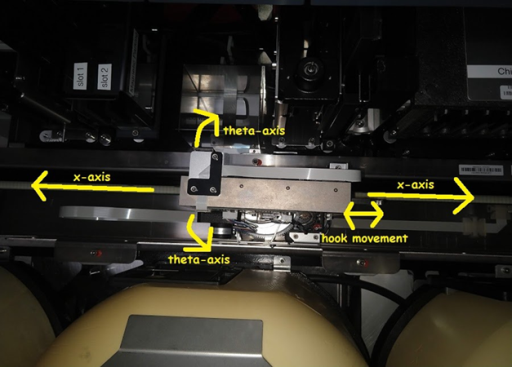
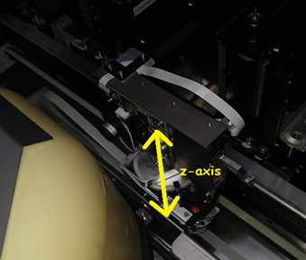

Linear Distributor Hook Motor Step Loss or Stall – Position X
Error Code
| Dec | Hex |
|---|---|
|
016.000.00128 |
0x10.0x00.0x0080 |
Complaint Description
Linear Distributor Hook motor step loss or stall. Position X.
10/25/2023 09:03:59 Fatal 016.000.00128 Linear Distributor hook motor suffered step loss or stalled. Position 0
TABLE OF CONTENTS
Technical Support
Troubleshooting
- Instruct customer to shutdown/restart, prime, and perform a run of untested samples.
- If the position is tested during a MW clean, instruct customer to perform the MW clean maintenance.
- Reference the “LD Positions Tested During Prime or MW” sheet below.
- Review logs for linear distributor messages, warnings, and critical error messages before the fatal error message.
- NotePad++ Search Terms:
- All LD movements: COP->PC 10
- All LD movements that gave a warning, critical, or fatal error message: COP->PC 10 [0-9][0-9] [0][1-3]
- NotePad++ Search Terms:
- Review case history to see if linear distributor errors occurred recently. If the same linear distributor error occurred recently, notify the FSEs.
- Instruct customer to monitor. If the issue reoccurs, dispatch FSEs.
References
LD Positions Tested During Prime or MW:

Linear Distributor Movement:


Field Service
Sticky Door
If hook step loss occurs at an Incubator or at a Load Station Door:
Resolution:
- Clean the door bearings to remove the tendency to stick.
- In Service Software, repeatedly re-teach and test the MTU picking and placing to verify the fix.
- Perform a System Operational Qualification procedure.
Test:
Check the Incubator and Load Station for sticking doors. Manually move the doors open and closed and observe for sticking.
Module position mounting screws have loosened
Resolution:
- Re-teach the Distributor to the Input Queue.
- Use a straight hex driver (not ball end) to properly torque the Input Queue mounting screws to ensure that the screws do not become loose.
- Lubricate and adjust the ball detent to reduce the amount of force required to open and close the Input Queue.
- Perform a System Level Operational Qualification.
- Close the Service Drawer, install the injector, start the PANTHER UI, and prime the instrument to test the Distributor MTU picking from the Input Queue.
Test:
- Inspect the mounting screws to determine if any are loose.
- If the Input Queue has moved because of operator use, inspect the ball detent for proper lubrication and adjustment.
Loose Theta Motor
Causing poor auto-teaching and excessive movement during MTU picking and placement. Or hook not square with Distributor Head.
Resolution:
- Adjust the Theta drive meshing.
- Re-teach the Distributor to all modules after adjusting the Theta drive. Most likely all modules have been taught incorrectly.
Test:
- Inspect the mounting screws to determine if any are loose.
- If the Input Queue has moved because of operator use, inspect the ball detent for proper lubrication and adjustment.
Loose Hook
causing poor auto-teaching and excessive movement during MTU picking and placement. Or, hook not square with Distributor head.
Resolution:
- Re-square the hook.
- Re-teach the Distributor to all modules.
- Perform a System Level Operational Qualification.
Test:
Inspect the hook for squareness with the Distributor head.
Distributor Teaching
Resolution:
- Inspect the Distributor for a loose hook, loose drive motors, or loose belts.
- Re-teach the Linear Distributor to the affected module, paying close attention to how the hook touches the teach pin. (procedure) If there are problems teaching, refer to the Trouble Shooting Guide section 017.000.00032Teach Sensor Active Before Starting Teach Movement" or section 017.000.00032 Teach Sensor Not Reached".
- Re-test MTU picking and placing at the Load Station through Service Software.
- Perform a System Level Operational Qualification.
TEST:
- Prepare the PANTHER instrument for service.
- Review te logs using view log for Distributor messages indicating "lost steps" or "lost some steps" at the suspected position and at other positions. "Lost some steps" is not a fatal message.
- Check the Distributor teaching at the affected positions.
- Check MTU placements of affected modules in Service Software.
Warped MTU carriage or slot
All positions
Resolution:
Replace the module with the affected position.
Test:
- Inspect the position and Distributor head for signs of white dust created by MTU scraping.
- Inspect picking and placing into the position repeatedly to determine if the MTU placement is rough
LD-Hook step losses at the IQ, SW 5.3
If the instrument is still on SW 5.3, make sure TB-01303 is implemented (adjusts the IQ packing).
 button at the top of the page to send feedback, comments, or change requests.
button at the top of the page to send feedback, comments, or change requests.